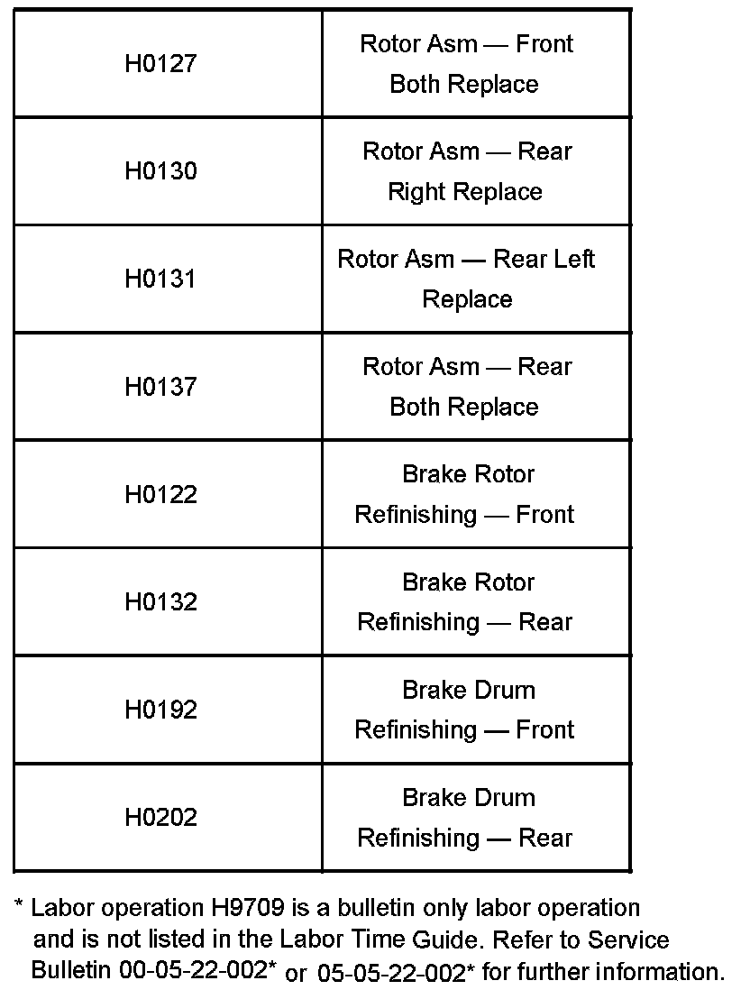

Brakes - Rotor/Drum Refinishing Labor Operations
Bulletin No.: 06-05-22-007Date: November 30, 2006
WARRANTY ADMINISTRATION
Subject:
Brake Rotor/Drum Refinishing Labor Operations
Models:
2005-2007 GM Passenger Cars and Light Duty Trucks (including Saturn)
2005-2007 HUMMER H2
2006-2007 HUMMER H3
2005-2007 Saab 9-7X (Canada Only)
The purpose of this bulletin is to advise dealership personnel of labor operation changes relating to brake repairs. Existing brake rotor and drum labor operations have been revised to remove the refinishing times and new labor operations have been established for refinishing brake rotors or drums. The changes will become effective with the release of the December 2006 Labor Time Guide.
The following changes:
Applies to all 2005-2007 vehicles, unless 2005 was the last year of production for that particular model. May apply to 2004 and prior models years if the vehicle was produced after 2005 - e.g. TrailBlazer, Envoy, etc.
Where the new labor operations for refinishing rotors or drums do not apply, the existing labor operations will still contain time for refinishing.
Always refer to the Labor Time Guide for the appropriate labor operations and time for the vehicle being repaired.

The list shown is of labor operations for brake service.

Disclaimer